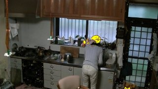
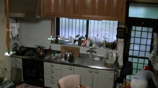
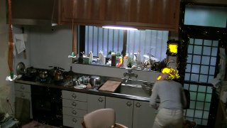

ターゲット色を抜き出す<p>
抜きだし自身はそうむずかしくないのですが、、、、<br>
<table>
<tr><td></td>
  <td></td></tr>
<tr><td>静止画の例で見せた絵は問題無いですが</td>
<td>
照明から離れ暗くなると検出されるターゲットは小さ
くなり、出窓に置いた近い色の瓶の方が大きくなって
しまいます  </td></tr>
<tr><td></td><td>鏡に映った方が大きくなったりも。。</td></tr>
<tr><td></td><td></td></tr>
</table>
